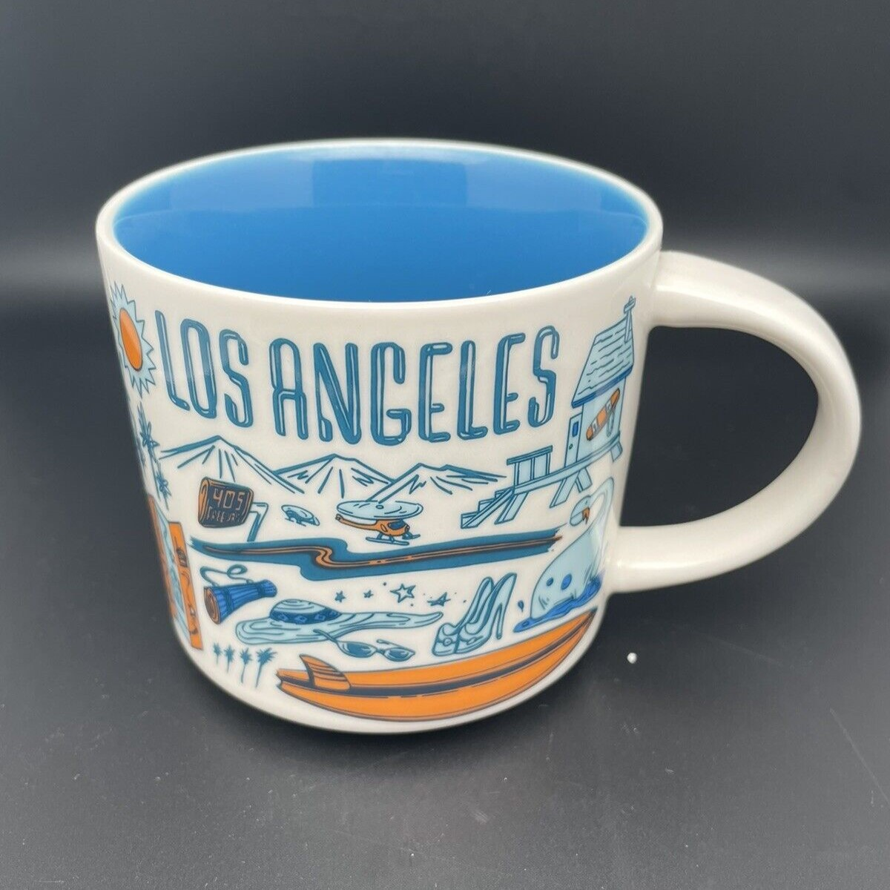

-

- Los Angeles Mug Archive
- A white mug with icons depicting Los Angeles on it. These icons include mountains, a surfboard, and a freeway, all colored in blue and orange. The inside of the mug is blue.
Narrative
Starbucks' Been There Series celebrates cities, states, and countries around the world, capturing their essence with distinctive, hand-drawn illustrations. The series offers a refreshing design, standing apart from their traditional mugs, and provides a deep dive into the local flair of each location.
The Los Angeles mug from the Been There Series is a vibrant homage to the City of Angels. Featuring a sun-soaked color palette that reflects the city's famous sunny weather, the design encapsulates both the modern and historic elements that make L.A. unique. One side showcases the iconic Hollywood sign, a symbol of dreams and entertainment. The palm trees, which line the streets of L.A., sway gracefully in the background, while surfboards allude to the city's close connection to the Pacific Ocean and its surf culture.
The skyline of downtown Los Angeles, with its skyscrapers, stands tall and proud. Notable landmarks like the Griffith Observatory, offering panoramic views of the city, and the historic Los Angeles Memorial Coliseum, home to numerous historic events, find a place on the mug. Another highlight is the depiction of a vintage movie camera, nodding to L.A.'s deep-rooted history in film and entertainment.
Smaller details such as the taco, paying tribute to the city's rich culinary scene, and the guitar, representing the music culture and festivals, can be found. The phrase "City of Angels" written in a playful script adds a final touch to the design.
This mug not only serves as a perfect coffee companion but also as a keepsake that encapsulates the diverse culture, history, and vibrancy of Los Angeles.